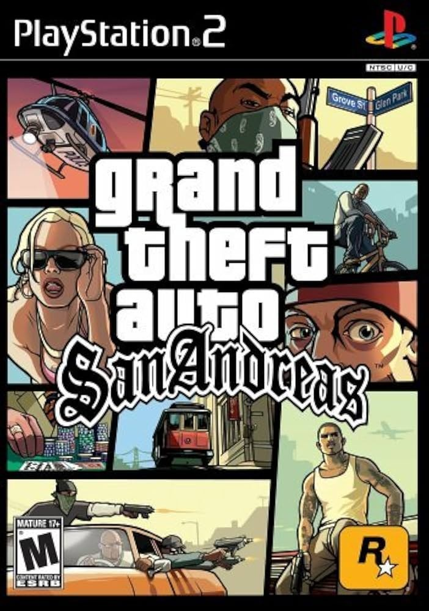

Sinopse
Grand Theft Auto: San Andreas é um jogo eletrônico de ação-aventura desenvolvido pela Rockstar North e publicado pela Rockstar Games. Lançado em outubro de 2004 para PlayStation 2, é o sétimo título da série Grand Theft Auto e o terceiro da trilogia em 3D.
A história se passa no estado fictício de San Andreas, baseado na Califórnia e Nevada, em 1992. O jogador controla Carl "CJ" Johnson, um ex-membro de gangue que retorna a Los Santos após cinco anos para o funeral de sua mãe. CJ descobre que sua família e antigos amigos estão em problemas e, ao tentar resolver tudo, se envolve em uma trama complexa que abrange as três principais cidades do estado: Los Santos, San Fierro e Las Venturas.
Características Principais
- Mundo aberto enorme com três cidades principais e áreas rurais
- Sistema de RPG com habilidades que melhoram com o uso
- Diversas atividades secundárias e missões
- Multiplataformas incluindo veículos terrestres, aéreos e aquáticos
- Trilha sonora com mais de 150 músicas em 11 estações de rádio
- Customização de personagem (roupas, cortes de cabelo, tatuagens)
Imagens Adicionais